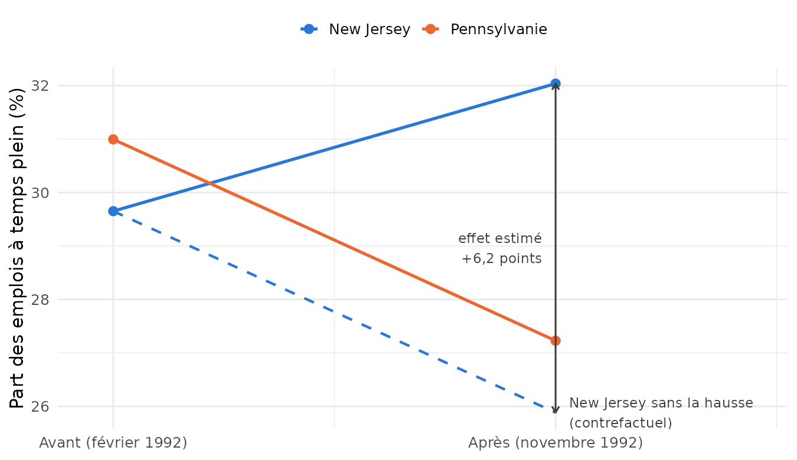

Jour 3 · Méthodes de régression et inférence causale — Formation régionale UEMOA
Département de sociologie, UQAM · SSAPOPLAB
25 novembre 2026
| Bloc | Durée | |
|---|---|---|
| 1 | Modéliser à l’ère de l’IA : trois tâches | 10 min |
| 2 | Cinq questions causales tirées de nos recherches | 10 min |
| 3 | Le contrefactuel et le biais de sélection | 15 min |
| 4 | L’expérience, vraie ou naturelle | 10 min |
| 5 | Données d’enquête : confusion, médiation, collision | 15 min |
| 6 | La régression : comparer à caractéristiques égales | 15 min |
| 7 | Stratégies d’identification : ce que font nos articles | 10 min |
| 8 | Valider, et ouvrir sur les nouvelles sources | 5 min |
| Tâche | Question | Exemple pour un INS |
|---|---|---|
| Décrire | Quoi ? Combien ? Où ? | Quelle part des accouchements est assistée, par région ? |
| Prédire | Qui ? Quand ? | Quelles femmes risquent d’accoucher sans assistance ? |
| Expliquer | Pourquoi ? Et si… ? | Les consultations prénatales augmentent-elles l’accouchement assisté ? |
Hernán, Hsu et Healy (2019) : ces trois tâches n’appellent ni les mêmes modèles, ni les mêmes variables.
Avec l’IA, calculer devient facile. Savoir quelle comparaison répond à quelle question devient la compétence rare.
| Article | Question | Traitement → résultat |
|---|---|---|
| Adjiwanou et LeGrand (2013) | Les CPN favorisent-elles l’accouchement assisté ? | CPN → accouchement assisté |
| Adjiwanou, Bougma et LeGrand (2018) | L’éducation du conjoint améliore-t-elle la santé des femmes ? | Éducation du conjoint → contraception, CPN, accouchement |
| Adjiwanou et N’Bouke (2015) | Pourquoi violence conjugale et contraception vont-elles de pair ? | Violence ↔︎ contraception |
| Adjiwanou, Boco et Yaya (2021) | Vivre avec un beau-père réduit-il la scolarisation ? | Beau-père → fréquentation scolaire |
| John et Adjiwanou (2021) | Le remariage freine-t-il la fécondité ? | Remariage → nombre d’enfants |
Toutes posent la même question de fond : que se serait-il passé autrement ?
Pour une femme i et un traitement D_i (au moins 4 CPN = 1, sinon 0) :
| Femme | CPN | Y_i(1) | Y_i(0) | Effet |
|---|---|---|---|---|
| Aminata | 1 | 1 | ? | ? |
| Fatou | 0 | ? | 0 | ? |
Le problème fondamental de l’inférence causale : on n’observe jamais les deux résultats pour la même personne.
\begin{aligned} \underbrace{E[Y \mid D=1] - E[Y \mid D=0]}_{\text{différence observée}} &= \underbrace{E[Y(1) - Y(0) \mid D=1]}_{\text{effet sur les traitées}} \\ &+ \underbrace{E[Y(0) \mid D=1] - E[Y(0) \mid D=0]}_{\text{biais de sélection}} \end{aligned}
Dans les données du labo (EDS Ghana 2003, femmes rurales, n = 1 886) :
| Accouchement assisté | |
|---|---|
| Femmes avec au moins 4 CPN | 40 % |
| Femmes avec moins de 4 CPN | 12 % |
| Différence observée | 28 points |
Combien de ces 28 points sont un effet des CPN, et combien un biais de sélection ? Avec de vraies données, personne ne connaît la réponse : tout le reste du cours sert à s’en approcher.
Discrimination à l’embauche (Bertrand et Mullainathan, 2004) : des CV identiques, un prénom tiré au sort.
| Prénom | Taux de rappel |
|---|---|
| À consonance blanche (Emily, Greg) | 9,7 % |
| À consonance afro-américaine (Lakisha, Jamal) | 6,4 % |
| Effet | −3,2 points |

Card et Krueger (1994) : le New Jersey relève son salaire minimum, pas la Pennsylvanie.
Hypothèse : tendances parallèles.
Avec des données d’enquête, la troisième condition est toujours la plus difficile. Les graphes causaux (DAG) obligent à dire quelles autres explications on envisage.
Un facteur de confusion influence à la fois le traitement et le résultat. Il faut le contrôler : comparer des femmes de même instruction, même richesse, même distance.
Le lieu d’accouchement est une conséquence des CPN. Le contrôler retire le chemin principal de l’effet : dans le labo, l’estimation tombe de 22 à 2 points.
Règle : une variable de contrôle doit être mesurée avant le traitement.
Dans l’EDS de Tanzanie, près de la moitié des enfants n’ont pas été pesés. Étudier le poids seulement chez les enfants pesés, c’est sélectionner sur un collisionneur : on fausse l’association entre l’instruction de la mère et l’accouchement en structure, et donc toute analyse qui les relie au poids.
Adjiwanou et N’Bouke (2015) : dans plusieurs pays d’Afrique subsaharienne, les femmes victimes de violence conjugale utilisent plus la contraception. Un paradoxe ?
Une enquête transversale mesure les deux en même temps : l’antériorité n’est pas garantie.
EDS de 13 pays (2006-2011), femmes en union non stérilisées.
| Méthode | Effet de la violence sur la contraception moderne |
|---|---|
| Probit simple | Positif dans 5 pays sur 13 (Burkina Faso, Mali, Nigeria, Tanzanie, Zimbabwe) |
| + autonomie des femmes | Inchangé : l’autonomie n’explique pas le paradoxe |
| Probit bivarié récursif (instruments : alcool du conjoint, violence du père, acceptation de la violence) | Significatif dans aucun pays |
| Appariement sur score de propension, bornes de Rosenbaum | Seul le Burkina Faso garde un effet robuste (+6 points) |
Le paradoxe venait surtout d’une mauvaise spécification : on traitait comme une cause une variable déterminée en même temps que le résultat.
Dale et Krueger : l’université privée « paie »-t-elle ? Neuf étudiants fictifs, regroupés selon les écoles où ils ont postulé et été admis.
| Comparaison | Bonus du privé |
|---|---|
| Naïve : tous les étudiants | 19 500 $ |
| À l’intérieur des groupes de même candidature | 12 500 $ |
La régression est un entremetteur automatisé : une moyenne pondérée de comparaisons « pommes avec pommes ».
Y_i = \alpha + \beta\, D_i + \gamma\, X_i + \varepsilon_i
\beta : l’effet du traitement, les contrôles X_i étant maintenus fixes.
Si le vrai modèle contient une variable Z omise :
\hat\beta_{\text{sans } Z} = \beta + \underbrace{\delta \times \gamma_Z}_{\text{biais de variable omise}}
Le biais est nul seulement si Z n’influence pas le résultat ou n’est pas liée au traitement. C’est la traduction algébrique de la confusion.
\log \frac{P(Y_i = 1)}{1 - P(Y_i = 1)} = \alpha + \beta\, D_i + \gamma\, X_i
| Dans le labo (Ghana 2003) | Sans contrôle | Avec contrôles |
|---|---|---|
| Rapport de cotes des CPN | 4,9 | 4,2 |
| Effet en points de pourcentage | 28 | 22 |
Adjiwanou, Bougma et LeGrand (2018) : 37 EDS d’Afrique subsaharienne et d’Asie, régressions logistiques multiniveaux.
Une interaction (D \times X) répond à la question : pour qui l’effet est-il le plus fort ?
| Stratégie | Hypothèse | Article |
|---|---|---|
| Contrôles, modèle multiniveau | Pas de confusion non observée | Adjiwanou, Bougma et LeGrand (2018) |
| Effets fixes de grappe, puis de mère | L’inobservé est commun à la grappe ou à la famille | Adjiwanou, Boco et Yaya (2021) |
| Correction de l’endogénéité (équations structurelles) | Le modèle décrit correctement la sélection dans le traitement | Adjiwanou et LeGrand (2013) |
| Double différence | Tendances parallèles | Card et Krueger (1994) |
| Probit bivarié avec instruments ; score de propension et bornes de Rosenbaum | Instruments valides ; force d’un facteur caché | Adjiwanou et N’Bouke (2015) |
Aucune méthode ne supprime toutes les hypothèses : chacune déplace la question vers une hypothèse qu’il faut défendre.
Adjiwanou, Boco et Yaya (2021) : 277 726 enfants de 6 à 14 ans, 33 EDS (2006-2015).
| Comparaison | Rapport de cotes de la fréquentation scolaire, beau-père vs deux parents |
|---|---|
| Effets fixes de grappe | 0,76 |
| Effets fixes de mère (frères et sœurs comparés entre eux) | 0,49 |
Adjiwanou et LeGrand (2013) : Ghana, Kenya, Ouganda, Tanzanie, milieu rural.
John et Adjiwanou (2021) : 34 pays, femmes de 40 à 49 ans. Dans 29 pays, les femmes remariées finissent avec moins d’enfants que celles restées dans leur première union. Mais qui se remarie ? Le divorce et le remariage ne sont pas tirés au sort : la sélection fait partie de la question.
| Pour prédire | Pour expliquer |
|---|---|
| Tester sur des données non utilisées pour l’estimation | Défendre les hypothèses d’identification |
| Éviter le sur-ajustement | Vérifier l’équilibre des groupes comparés |
| Validation croisée | Analyses de sensibilité : quelle force devrait avoir un facteur caché pour annuler le résultat ? |
Les nouvelles sources (téléphonie, réseaux sociaux, images satellitaires) multiplient les possibilités de prédire. Pour expliquer, elles servent surtout quand elles créent des expériences naturelles ou des données longitudinales (Salganik, 2018, chapitre 4).
Choisissez une question de votre note pays. Est-ce une question de description, de prédiction ou d’explication ? Si c’est une question causale, quel est le principal facteur de confusion, et quelle stratégie permettrait de l’écarter ?
Cet après-midi, le labo reprend chaque étape : l’expérience des CV, la double différence du salaire minimum, puis l’EDS du Ghana de l’article de 2013, où l’on voit l’estimation bouger d’une méthode à l’autre.
Formation UEMOA · Jour 3 · Département de sociologie, UQAM · SSAPOPLAB